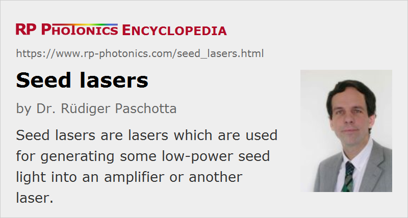

Seed Lasers
Definition: lasers which are used for generating some seed light into an amplifier or another laser
More general terms: lasers
Opposite term: slave lasers
Categories: lasers, optical amplifiers
How to cite the article; suggest additional literature
Author: Dr. Rüdiger Paschotta
A seed laser is a laser the output which is injected into some amplifier or another laser. This is done in, e.g., the following situations:
- A seed laser combined with an amplifier forms a master oscillator power amplifier configuration, used for generating an output with high power. Compared with an approach with a single high-power laser, it is easier to obtain certain features with a low-power seed laser, e.g. single-frequency operation with narrow linewidth, a wide wavelength tuning range or the generation of ultrashort pulses.
- Instead of injection into an amplifier, a single-frequency seed beam can be sent into another laser (slave laser) or into an optical parametric oscillator in order to achieve narrowband emission via injection seeding. It is sometimes possible even to achieve injection locking, where the emitted frequency exactly equals the seed frequency, and the laser noise may be close to that of the seed laser.
Typical types of seed lasers are small laser diodes (single-frequency or gain-switched), short-cavity fiber lasers, and miniature solid-state lasers such as nonplanar ring oscillators (NPROs).
Suppliers
The RP Photonics Buyer's Guide contains 10 suppliers for seed lasers. Among them:
Questions and Comments from Users
Here you can submit questions and comments. As far as they get accepted by the author, they will appear above this paragraph together with the author’s answer. The author will decide on acceptance based on certain criteria. Essentially, the issue must be of sufficiently broad interest.
Please do not enter personal data here; we would otherwise delete it soon. (See also our privacy declaration.) If you wish to receive personal feedback or consultancy from the author, please contact him e.g. via e-mail.
By submitting the information, you give your consent to the potential publication of your inputs on our website according to our rules. (If you later retract your consent, we will delete those inputs.) As your inputs are first reviewed by the author, they may be published with some delay.
See also: optical amplifiers, master oscillator power amplifier, slave laser, single-frequency operation, single-frequency lasers, injection locking, injection seeding
and other articles in the categories lasers, optical amplifiers
|  |
If you like this page, please share the link with your friends and colleagues, e.g. via social media:
These sharing buttons are implemented in a privacy-friendly way!